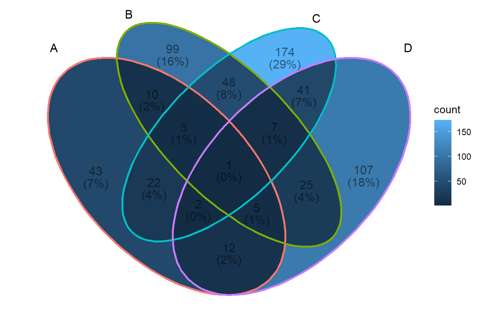
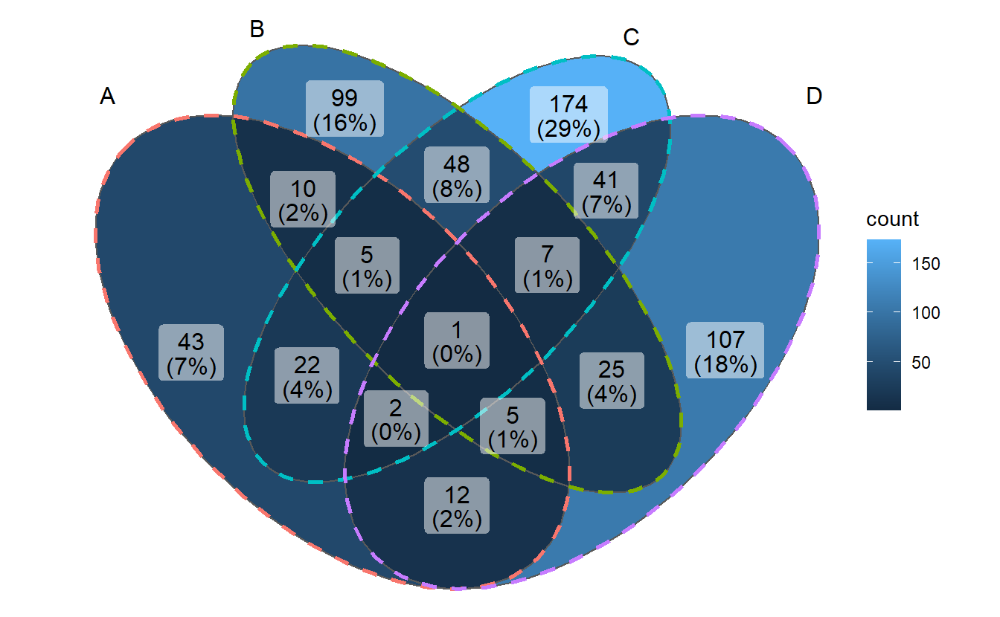
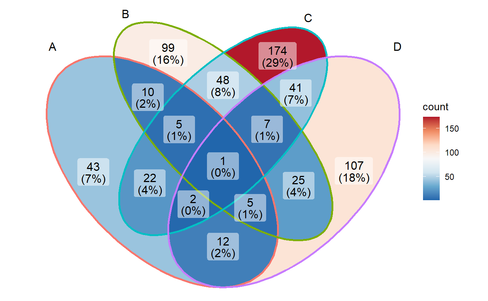

Chapter 4 Methods
ggVennDiagram is built on the shoulder of the other related R packages.
Except for ggplot2, it also depends on the functions in dplyr, tibble, sf, and so on.
Besides, the design of ggVennDiagram version 1.0 is inspired by two packages,
venn and RVenn.
4.1 Predefined sysdata in venn
venn::venn() support Venn diagram up to 7 sets.
It use predefined values to plot polygons.
library(dplyr)
sets <- venn:::sets
glimpse(sets)## Rows: 9,536
## Columns: 5
## $ s <int> 1, 1, 1, 1, 1, 1, 1, 1, 1, 1, 1, 1, 1, 1, 1, 1, 1, 1, 1, 1, 1, 1,...
## $ v <int> 0, 0, 0, 0, 0, 0, 0, 0, 0, 0, 0, 0, 0, 0, 0, 0, 0, 0, 0, 0, 0, 0,...
## $ n <int> 1, 1, 1, 1, 1, 1, 1, 1, 1, 1, 1, 1, 1, 1, 1, 1, 1, 1, 1, 1, 1, 1,...
## $ x <dbl> 500.000, 493.573, 487.185, 480.838, 474.533, 468.273, 462.059, 45...
## $ y <dbl> 750.000, 749.918, 749.673, 749.267, 748.703, 747.982, 747.106, 74...- s: number of sets;
- v: whether it is for ellipse;
- n: No. of polygons;
The following is a visualization of venn predefined polygons.
These polygons can’t be generated using simple functions, but are painstaking manual work
that took years to create. I have communicated with the author of venn, Prof. Adrian Dușa,
and get his consent to reuse these data.
library(ggplot2)
ggplot(sets, aes(x,y)) +
geom_polygon(aes(color=factor(n)),alpha=1/5) +
facet_grid(v~s) +
coord_fixed() +
theme_void() +
theme(legend.position = "none")
In ggVennDiagram, we also store a predefined shapes in sysdata, and this
will no doubt improve shape generations in user-side.
You may navigate the shape data with get_shape_data() function.
ggVennDiagram::get_shape_data(4)## # A tibble: 8 x 6
## nsets type shape_id component id xy
## <dbl> <chr> <chr> <chr> <chr> <list>
## 1 4 ellipse 401f setEdge 1 <dbl[,2] [101 x 2]>
## 2 4 ellipse 401f setEdge 2 <dbl[,2] [101 x 2]>
## 3 4 ellipse 401f setEdge 3 <dbl[,2] [101 x 2]>
## 4 4 ellipse 401f setEdge 4 <dbl[,2] [101 x 2]>
## 5 4 ellipse 401f setLabel 1 <dbl[,2] [1 x 2]>
## 6 4 ellipse 401f setLabel 2 <dbl[,2] [1 x 2]>
## 7 4 ellipse 401f setLabel 3 <dbl[,2] [1 x 2]>
## 8 4 ellipse 401f setLabel 4 <dbl[,2] [1 x 2]>or plot them with plot_shapes().
ggVennDiagram::plot_shapes()
4.2 Set operation in RVenn
RVenn defines a S4 class object Venn to store members of Venn sets.
library(purrr)
library(RVenn)
library(ggplot2)
ggVennDiagram(gene_list)
Construct the Venn object.
toy <- Venn(gene_list)
glimpse(toy)## Formal class 'Venn' [package "RVenn"] with 2 slots
## ..@ sets :List of 4
## .. ..$ A: chr [1:100] "gene284" "gene106" "gene712" "gene905" ...
## .. ..$ B: chr [1:200] "gene403" "gene644" "gene438" "gene29" ...
## .. ..$ C: chr [1:300] "gene27" "gene788" "gene287" "gene361" ...
## .. ..$ D: chr [1:200] "gene601" "gene165" "gene479" "gene390" ...
## ..@ names: chr [1:4] "A" "B" "C" "D"On this basis, it implements methods to calculate the intersection/overlapping/union of different sets.
4.2.1 Set operations in RVenn
- Intersection
# intersection
overlap(toy)## [1] "gene757"overlap(toy, slice = 1:3)## [1] "gene876" "gene405" "gene361" "gene63" "gene679" "gene757"overlap(toy, slice = c("A","B","C"))## [1] "gene876" "gene405" "gene361" "gene63" "gene679" "gene757"- Union
unite(toy) %>% sort()## [1] "gene1" "gene10" "gene101" "gene102" "gene103" "gene104" "gene105"
## [8] "gene106" "gene107" "gene110" "gene112" "gene114" "gene115" "gene116"
## [15] "gene117" "gene118" "gene120" "gene121" "gene122" "gene125" "gene126"
## [22] "gene127" "gene131" "gene133" "gene134" "gene136" "gene138" "gene140"
## [29] "gene141" "gene145" "gene146" "gene147" "gene148" "gene150" "gene153"
## [36] "gene155" "gene16" "gene161" "gene163" "gene164" "gene165" "gene166"
## [43] "gene167" "gene168" "gene169" "gene17" "gene171" "gene173" "gene174"
## [50] "gene176" "gene177" "gene18" "gene180" "gene182" "gene183" "gene187"
## [57] "gene188" "gene189" "gene19" "gene195" "gene196" "gene197" "gene198"
## [64] "gene199" "gene2" "gene20" "gene201" "gene203" "gene206" "gene207"
## [71] "gene208" "gene209" "gene21" "gene212" "gene213" "gene214" "gene215"
## [78] "gene217" "gene218" "gene219" "gene22" "gene220" "gene223" "gene224"
## [85] "gene226" "gene227" "gene23" "gene230" "gene234" "gene235" "gene237"
## [92] "gene238" "gene241" "gene244" "gene245" "gene246" "gene247" "gene249"
## [99] "gene25" "gene250"
## [ reached getOption("max.print") -- omitted 501 entries ]- Set difference
discern(toy, slice1 = 1:3) %>% sort()## [1] "gene101" "gene104" "gene106" "gene107" "gene110" "gene112" "gene114"
## [8] "gene115" "gene116" "gene117" "gene118" "gene121" "gene122" "gene126"
## [15] "gene127" "gene133" "gene134" "gene136" "gene138" "gene140" "gene141"
## [22] "gene146" "gene147" "gene148" "gene150" "gene153" "gene155" "gene16"
## [29] "gene161" "gene163" "gene164" "gene166" "gene167" "gene171" "gene174"
## [36] "gene176" "gene177" "gene18" "gene182" "gene183" "gene188" "gene19"
## [43] "gene197" "gene198" "gene199" "gene2" "gene20" "gene201" "gene209"
## [50] "gene21" "gene212" "gene213" "gene214" "gene215" "gene217" "gene219"
## [57] "gene223" "gene224" "gene226" "gene227" "gene23" "gene230" "gene234"
## [64] "gene235" "gene238" "gene246" "gene25" "gene250" "gene251" "gene252"
## [71] "gene253" "gene254" "gene255" "gene263" "gene267" "gene268" "gene270"
## [78] "gene272" "gene275" "gene277" "gene278" "gene279" "gene28" "gene281"
## [85] "gene284" "gene287" "gene289" "gene29" "gene293" "gene295" "gene297"
## [92] "gene298" "gene302" "gene303" "gene304" "gene305" "gene309" "gene31"
## [99] "gene310" "gene312"
## [ reached getOption("max.print") -- omitted 301 entries ]discern(toy, slice1 = 1:2, slice2 = 3:4) %>% sort()## [1] "gene101" "gene104" "gene106" "gene112" "gene115" "gene122" "gene133"
## [8] "gene134" "gene136" "gene146" "gene148" "gene161" "gene163" "gene164"
## [15] "gene167" "gene174" "gene176" "gene177" "gene18" "gene183" "gene188"
## [22] "gene19" "gene197" "gene2" "gene209" "gene213" "gene217" "gene223"
## [29] "gene226" "gene227" "gene238" "gene246" "gene251" "gene253" "gene267"
## [36] "gene268" "gene284" "gene29" "gene293" "gene303" "gene305" "gene314"
## [43] "gene316" "gene319" "gene32" "gene327" "gene328" "gene348" "gene349"
## [50] "gene363" "gene364" "gene365" "gene373" "gene384" "gene386" "gene391"
## [57] "gene400" "gene401" "gene403" "gene411" "gene416" "gene420" "gene424"
## [64] "gene425" "gene428" "gene43" "gene431" "gene435" "gene436" "gene438"
## [71] "gene444" "gene458" "gene474" "gene475" "gene493" "gene5" "gene50"
## [78] "gene500" "gene523" "gene530" "gene564" "gene566" "gene570" "gene574"
## [85] "gene575" "gene580" "gene584" "gene588" "gene592" "gene597" "gene614"
## [92] "gene626" "gene631" "gene650" "gene657" "gene662" "gene663" "gene680"
## [99] "gene693" "gene695"
## [ reached getOption("max.print") -- omitted 52 entries ]In ggVennDiagram, region value calculation depends on the RVenn package and
new functions written on its defined Venn object.
There are totally \(2^n–1\) regions in a Venn diagram, in which \(n\) is the number of sets.
We developed discern_overlap() to calculate the members of every Venn regions.
By default, it will return the intersection of all the sets, which only contains one gene here.
discern_overlap(toy)## [1] "gene757"discern_overlap(toy, slice = 1:2)## [1] "gene712" "gene133" "gene931" "gene213" "gene747" "gene597" "gene268"
## [8] "gene871" "gene197" "gene136"We construct a Polygon object that inherits Venn to store shape data.
And expanded discern_overlap() method to calculate region shapes.
After calculation, the member and count of each region are stored with region ids in a tibble,
and then joined with the region shape object by unique ids. Likewise,
the member and count of sets are assigned to the SetEdge by unique ids in parallel.
By doing this, a complete VennPlotData object is finished and can be used for plotting.